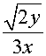

System Requirement Check For Best Performing |
Microsoft Internet Explorer Users:
Before using MathEdit,the Mathplayer plugin
for MathML display is a must.
You can Download
MathPlayer
or
See More About MathPlayer
or Try The Official Installation Check
Mozilla Firefox Users:
Firefox itself supports MathML, it's recommand but not a must that you install the STIX Fonts for MathML Display in firefox.
Download STIX Fonts , or See More About STIX Fonts
|
Here are some MathML codes:
<mml:math>
<mml:apply>
<mml:divide/>
<mml:apply>
<mml:root/>
<mml:apply>
<mml:times/>
<mml:cn>2</mml:cn>
<mml:ci>y</mml:ci>
</mml:apply>
<mml:apply>
<mml:times/>
<mml:cn>3</mml:cn>
<mml:ci>x</mml:ci>
</mml:apply>
</mml:apply>
</mml:math>
|
|
A rendering of which is shown below:
2
y
3
x
|
Below is mathematical expression displayed if plugin installed :
 |
Comparing these two expressions,
If your browser displays those equations correctly,
Mathplayer plugin has been Installed,
if not,you need download and install.
|
|